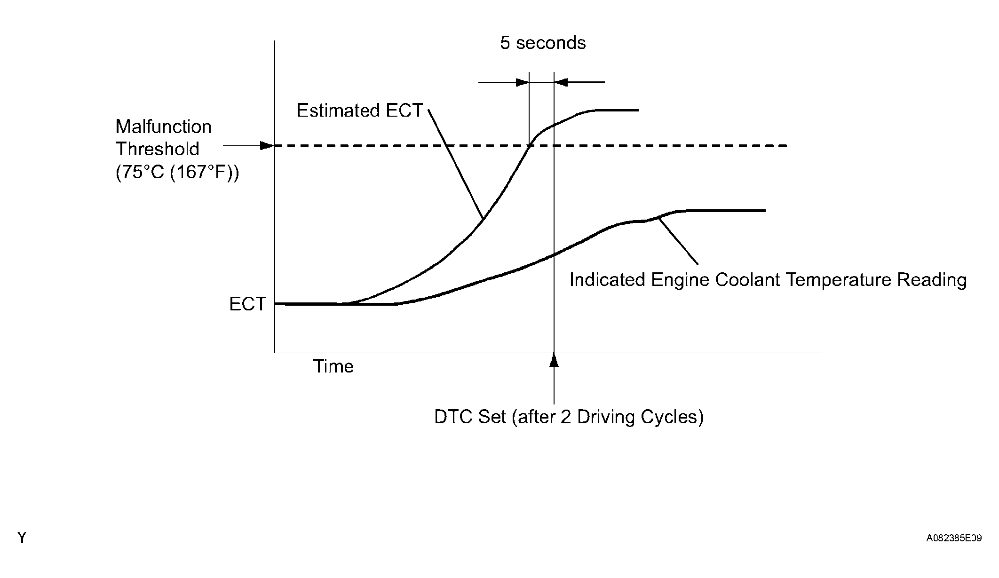

Monitor Description

Courtesy of © TOYOTA, LICENSE AGREEMENT TMS1002The ECM estimates the ECT based on starting temperature, engine loads, and engine speeds. The ECM then compares the estimated temperature with the actual ECT. When the estimated ECT reaches 75°C (167°F), the ECM checks the actual ECT. If the actual ECT is less than 75°C (167°F), the ECM will interpret this as a malfunction in the thermostat or the engine cooling system and sets the DTC.